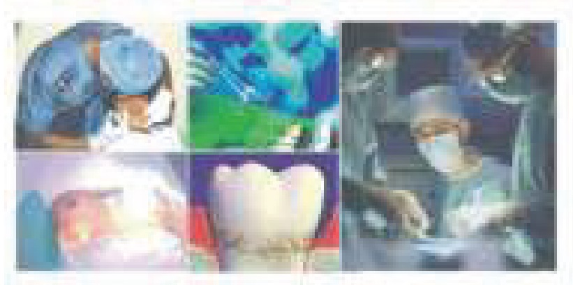
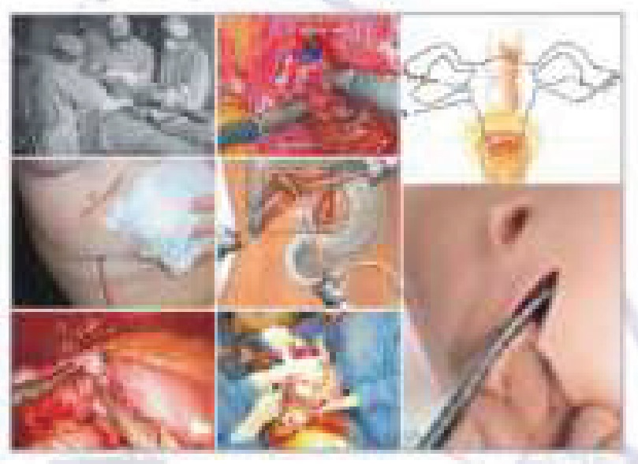
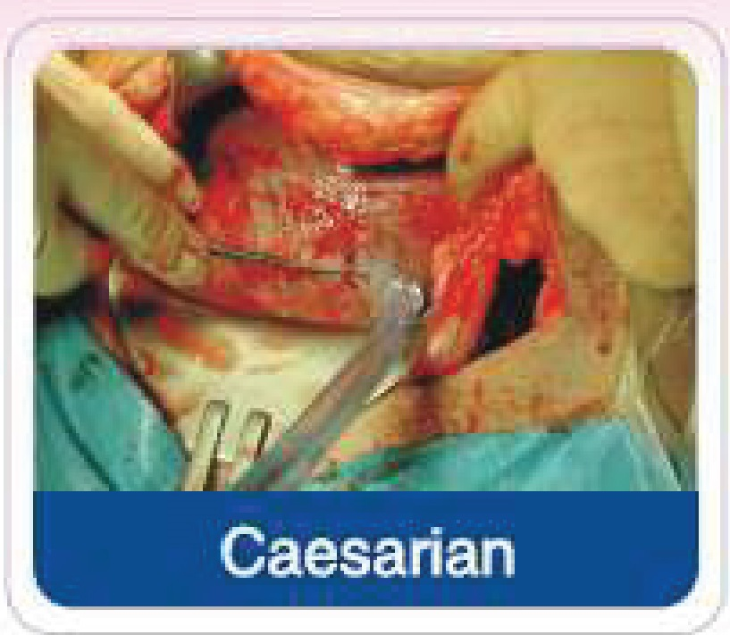
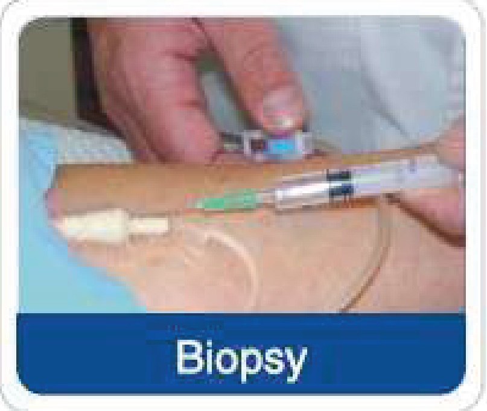
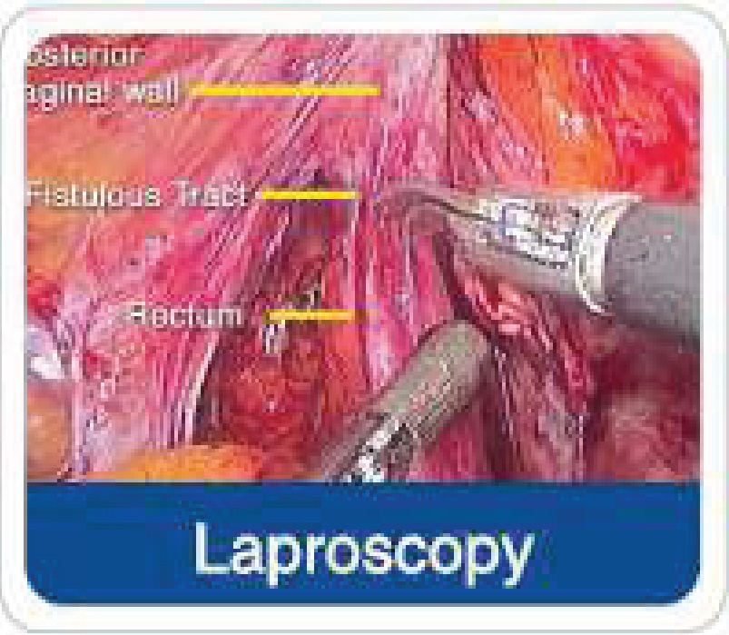
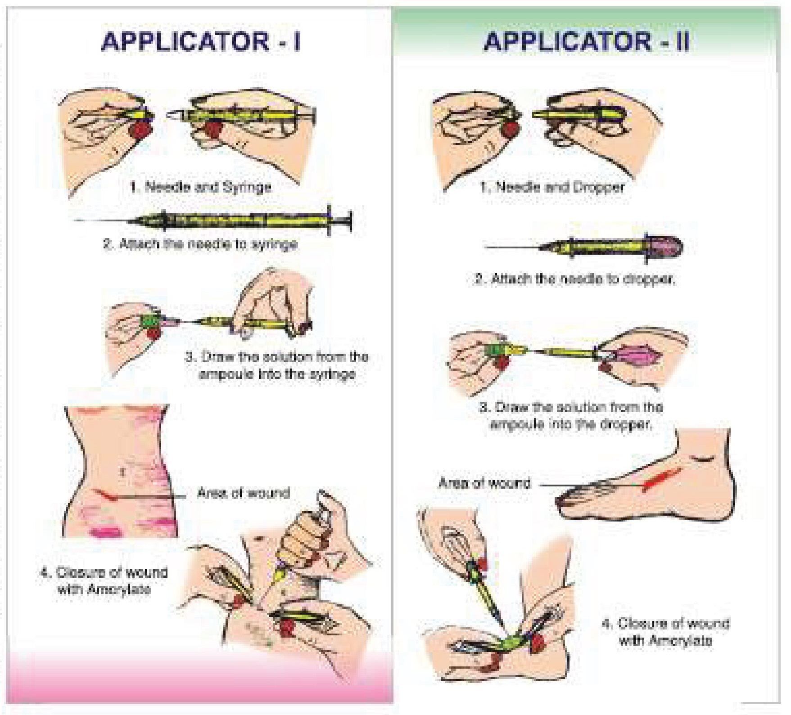
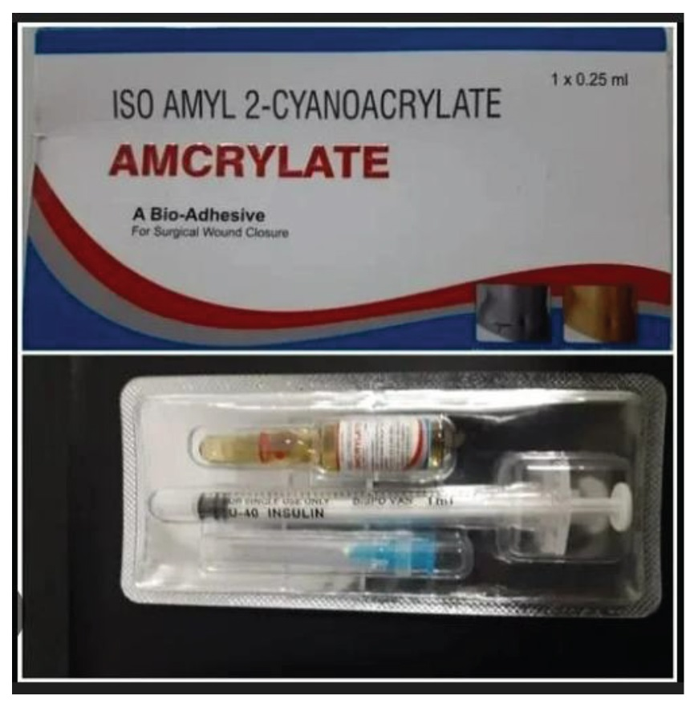

?
- Highlights
- Dental Implantology
- Prosthetics
- Regenerative Products
-
Robotic Navigation


Navident
- Photogrammetry
- Resources
- About Us
wonder care for wonud closure - A patient Molecule
AMCRYLATE : is developed by Concord Drugs Ltd. in technical collaboration with IICT (Indian Institute of Chemical Technology) and with assistance of TIFAC (The Technology Information Forecasting and Assessment Council, New Delhi)
ISO amyl - 2 Cyanoacrylate undergoes an exothermic polymerization catalysed by the presence of small quantities of weak base such as water. This anionic polymerization provides bonding action. The adhesiveness is maximised by spreading monomer in a very thin film.
Amcrylate → is a Bio-Adhesive which contains Iso - Amyl 2 - Cyanoacrylate.
AMCRYLATE i.e. iso-Amyl 2 - Cyanoacrylate is superior than N _ Butyl Cyanoacrylate since it does not brittle and fracture on long lacerations.
AMCRYLATE is also superior than octyle Cyanoacrylate as it has faster tissue bonding capacity and also cures faster.
AMCRYLATE has longer molecular chain, the toxicity is much reduced. So by increasing the size of the molecule it is possible to lengthen the time taken to polymerize and thus it gives ample time to the surgeon to close the incision after aligning the cut edges very well.
Amcrylate → is a sterile, non - toxic, haemostatic & bacteriostatic.
Amcrylate → is a monomer but when it gets into contact with moisture it gets converted to Polymer.
Amcrylate → solidifies within 5 to 10 seconds and solidifies fast in alkaline and slowly in acidic media.
Amcrylate → does not get absorbed in the blood and does not react to the tissue fluids.
Amcrylate → produces less oedema formation and granuloma than sutures.
Amcrylate → is a free flowing liquid monomer to spread easily in between the two skin Lesions of the wound to be closed and holds tightly and permanently.
Amcrylate → reduces the risk of post surgical infection & trauma - thus it is simple and safe to use.
Amcrylate → biodegradable and eliminates from the body by urine and faeces.





Cut the Amcrylate glass ampoule with an ampoule cutter. Draw the total Amcrylate solution into special applicators provided along with the Amcrylate ampoule. Use the loaded syringe or dropper applicator gently for application directly on the tissue edges with correct position of wound surface to be joined by controlled delivery and flow. (If necessary use the needle provided along with the ampoule for thin application). Keep the wound surfaces as dry as possible and hold the sides of the wound together for 60 seconds after Amcrylate application. Always apply thin layer and remove the excess with dry swab immediately (Refer the figures depicted right side). Subcutaneous sutures may be applied wherever necessary.

Amcrylate is sterile tissue adhesive for single use only. Discard the left over adhesive. Keep away the instruments from the adhesive. In case of accidental adhesion Amcrylate tissue adhesive can be removed with acetone or dimethyl formamide. (Make sure the condition of the adhesive is in liquid form. Do not use viscous adhesive).
Avoid too thick application. The heat on polymerization may cause injury to the adjacent tissue and reduces the healing due to slow absorption.
Amcrylate should not be used for the closure of the wound on the surface of the brain or on the central peripheral nervous system.
Amcrylate is available in 0.25 & 0.5 ml Ampoules containing ISO Pentyl (Amyl) 2 Cyanoacrylate.
Amcrylate,manufactured by Concord Drugs Limited, is a sterile, medical-grade, liquid tissue bio-adhesive (cyanoacrylate) designed for rapid, needle-free closure of surgical incisions and wounds. It acts as a protective, flexible barrier that reduces infection risks, minimizes scarring, and replaces stitches.
Composition:Contains iso-amyl 2-cyanoacrylate.
Composition:Contains iso-amyl 2-cyanoacrylate.
Mechanism:It is a fast-acting adhesive that forms a strong, flexible bond upon contact with moisture.
Benefits: It acts as a bacteriostatic/bio-static agent, minimizes scarring, provides a water-resistant seal, and is generally painless to apply.
Key Features:It is non-toxic, non-allergic, and biodegradable, degrading slowly and safely within the body.
It is typically available in 0.25ml or 0.5ml dose
Manufacturer:
CONCORD DRUGS LIMITED.
Survey No: 249, Brahmanapally(V), Abdullapurmet (M), R.R.District,
Telangana, INDIA – 501511
